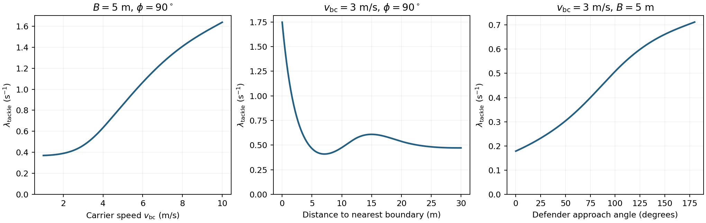
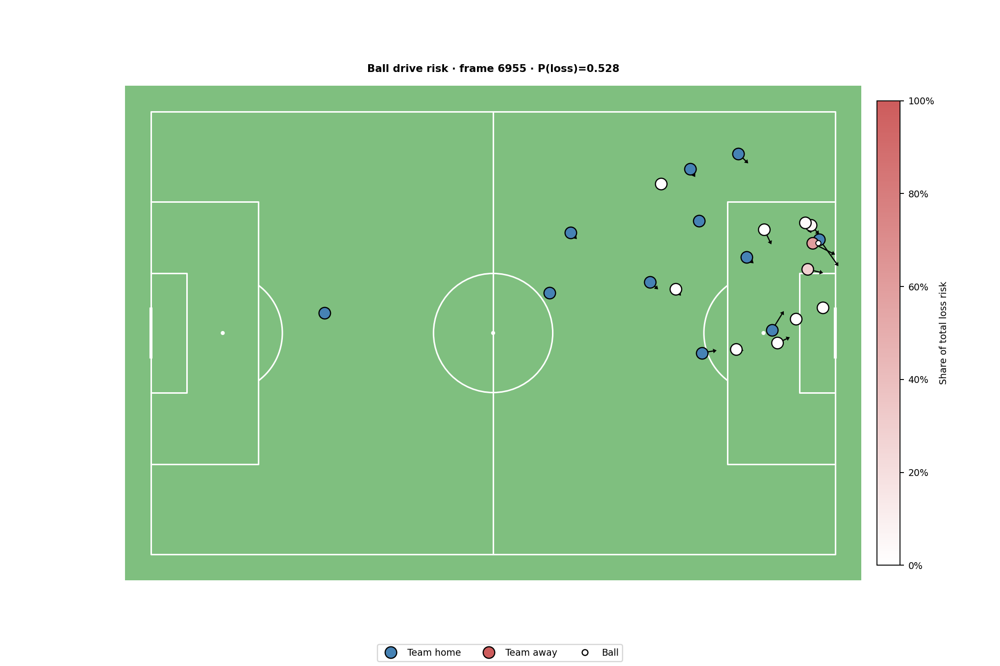
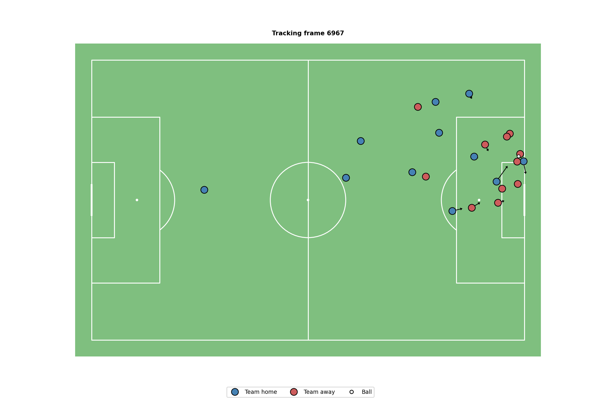
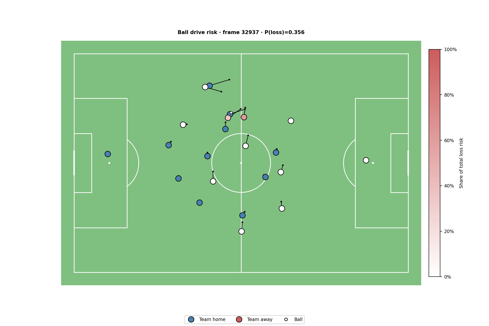
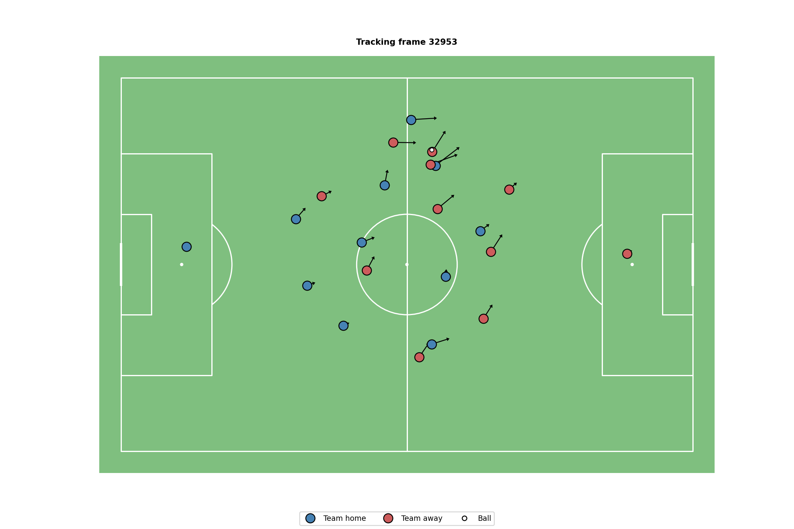

from pathlib import Path
import os
import matplotlib.pyplot as plt
from PRESS import PRESS
from PRESS.model import BallDriveModel
from PRESS.visualization import plot_ball_drive_risk
opendata = Path(os.environ.get("SKILLCORNER_OPENDATA", Path.cwd().parent / "opendata"))
match_dir = opendata / "data/matches/2017461"
press = PRESS.from_skillcorner(match_dir)
frame_id = 6955
state = press.get_state(frame_id)
press.compute_ball_drive_risk(frame_id, model=BallDriveModel.pretrained())
plot_ball_drive_risk(press, frame_id)
plt.savefig("figures/vignette_01_drive_pitch.png", dpi=170)
plt.savefig("figures/vignette_01_drive_pitch.svg")
plt.close()Ball-drive risk
1. Motivation and model overview
The ball-drive risk component estimates the probability that the current ball carrier loses possession during a canonical one-second ball drive, as segmented in Possessions and checkpoints. It is the action-specific risk \(d_t\) used by PRESS to construct the possession-loss hazard. The event is the loss of possession by the current player during the drive.
The model combines two ideas from the literature. Bekkers’ arrival formulation provides the idea of intercepting a moving ball carrier: the time a defender needs to reach the carrier’s projected position determines whether an intervention is possible (Bekkers 2025). Spearman’s pitch-control framework provides the uncertainty on arrival times and the idea of control: a player arriving at a location establishes control at a certain rate (Spearman et al. 2017; Spearman 2018). PRESS adapts these ideas to a player already in possession: a defender must reach the carrier and, once there, can generate a successful defensive intervention at a certain tackle rate. This rate plays a role analogous to the control rate in pitch control, but measures the intensity of possession loss, and the uncertainty on arrival turns each defender’s arrival time into a probability of reaching the carrier. PRESS does not reproduce Bekkers’ aggregate pressing score.
Each defender contributes a time-varying cause-specific hazard. A shared survival process combines these contributions into the probability of retaining the ball over one second. The one-second action convention follows the modular EPV perspective of Fernández, Bornn and Cervone (Fernandez, Bornn, and Cervone 2019; Fernandez, Bornn, and Cervone 2021).
The approach is physics-informed: motion and reachability follow an explicit physical approximation, whereas tackle intensity is estimated from observed outcomes. The tackle rate is represented by a penalized additive spline model fitted to observed outcomes.
2. Motion and defender interception time
Projected ball-carrier trajectory
Let \(x_{\mathrm{bc}}(0)\) and \(v_{\mathrm{bc}}(0)\) denote the observed position and velocity of the ball carrier at the evaluation frame. Over the one-second drive, the carrier’s trajectory is approximated by constant-velocity motion:
\[ x_{\mathrm{bc}}(t)=x_{\mathrm{bc}}(0)+v_{\mathrm{bc}}(0)t,\qquad 0\le t\le 1. \]
This projection depends only on the initial observed state and provides a common reference for evaluating defender interception times, reachability, boundary proximity and approach angles throughout the drive.
Travel and turning time
For each defender \(i\), let \(x_i(0)\) and \(v_i(0)\) denote the observed position and velocity at the evaluation frame. The defender’s target is the projected carrier position \(x_{\mathrm{bc}}(t)\), at distance
\[ r_i(t)=\lVert x_{\mathrm{bc}}(t)-x_i(0)\rVert. \]
The travel-time approximation assumes linear acceleration \(a=a_{\mathrm{linear}}\) from the initial speed \(u_i=\lVert v_i(0)\rVert\) up to an effective speed \(v_{\max}\). For \(u_i\le v_{\max}\), the time and distance required to reach this speed are
\[ t_a=\max\left\{\frac{v_{\max}-u_i}{a},0\right\}, \qquad d_a=u_it_a+\frac12 at_a^2. \]
The estimated travel time to the projected target is therefore
\[ t_{\mathrm{move},i}(t)= \begin{cases} \dfrac{\sqrt{u_i^2+2ar_i(t)}-u_i}{a}, & r_i(t)\le d_a,\\[6pt] t_a+\dfrac{r_i(t)-d_a}{v_{\max}}, & r_i(t)>d_a. \end{cases} \]
When the observed initial speed exceeds \(v_{\max}\), the defender retains that speed without further acceleration, giving \(t_{\mathrm{move},i}(t)=r_i(t)/u_i\). Thus, \(v_{\max}\) limits the acceleration phase but does not cap observed initial speeds.
Travel time is supplemented by a heading-dependent turning delay, following the approach of Pleuler (Pleuler 2020). Let \(\theta_i(t)\) denote the angle between the defender’s initial velocity and the direction of the projected target. With turning-acceleration parameter \(a_{\mathrm{turn}}\), the delay is
\[ t_{\mathrm{turn},i}(t)=\frac{u_i\theta_i(t)}{a_{\mathrm{turn}}}. \]
This approximation follows from a turning radius \(R=u_i^2/a_{\mathrm{turn}}\) and the corresponding arc time \(R\theta_i/u_i\). Turning is represented as an additional delay, without explicitly simulating the curved trajectory.
Combining travel and turning gives the estimated interception time:
\[ \tau_i(t)=t_{\mathrm{move},i}(t)+t_{\mathrm{turn},i}(t). \]
For targets within \(0.1\) m of the defender, the implementation sets \(\tau_i(t)=0\). The resulting interception time determines the defender’s probabilistic reachability, introduced in the next section.
3. Probabilistic defender reachability
As in the pitch-control approach, deterministic arrival times are converted into a smooth reachability gate. With logistic arrival-time dispersion \(s\) (in seconds), defender \(i\) has reachability
\[ F_i(t)=\left[1+\exp\left\{-\frac{\pi\,[t-\tau_i(t)]}{\sqrt{3}\,s}\right\}\right]^{-1}. \]
The parameter \(s\) is the standard deviation of the corresponding logistic arrival-time uncertainty. The gate increases when the defender can reach the projected carrier position sooner relative to elapsed time.
4. Tackle intensity
The second ingredient is the instantaneous rate at which a defender who has reached the carrier can cause loss of control. It plays the role of the control rate in pitch control, which sets how quickly a player establishes control: the tackle rate \(\lambda_i(t)\), with units s\(^{-1}\), sets how quickly defender \(i\) can dispossess the carrier once at the carrier. Whether the defender can reach the carrier in time is described separately by the reachability gate \(F_i(t)\) of Section 3. The tackle rate depends on the state of the carrier and of the defender through three covariates: the carrier speed \(\lVert v_{\mathrm{bc}}\rVert\), the signed minimum distance \(B(t)\) of the projected carrier position from the pitch boundaries, and the defender approach angle \(\phi_i(t)\).
Why these covariates?
Each covariate is defined below together with its motivation.
Carrier speed. The speed \(\lVert v_{\mathrm{bc}}\rVert\), in m/s, is the magnitude of the carrier’s observed velocity at the evaluation frame, and it stays constant along the projected path. Schepers et al. identify movement speed as an important predictor of dribbling outcomes (Schepers et al. 2025). Greater speed can make fine ball control more difficult, increasing vulnerability to intervention. The effect of speed enters the tackle rate through a smooth function, defined below, whose magnitude and shape are estimated without imposing a strictly log-linear response.
The other two covariates describe the spatial constraints on the carrier. The space available to the carrier is recognised as one of the ingredients of defensive pressure, and it appears as a feature in SkillCorner’s pressure metrics (SkillCorner 2026). Two aspects contribute to defining it: the distance of the carrier from the pitch boundary, and the angle of the defender’s approach, which measures the direction of engagement relative to the carrier’s cone of vision and how directly the defender can intervene.
Boundary proximity. The covariate \(B(t)\), in m, is the signed minimum distance from the projected carrier position to all four pitch boundaries, recomputed along the projected path:
\[ B(t)=\min\!\left\{\frac L2-x_{\mathrm{bc}}(t),\frac L2+x_{\mathrm{bc}}(t),\frac W2-y_{\mathrm{bc}}(t),\frac W2+y_{\mathrm{bc}}(t)\right\}. \]
Here \(L\) and \(W\) denote the pitch length and width. Using all four boundaries accounts for the goal lines as well as the touchlines, and \(B(t)\) becomes negative beyond the pitch boundary. Near a boundary, the carrier has fewer possible directions in which to evade an intervention, so a small \(B(t)\) is expected to raise the tackle rate.
Defender approach angle. The angle \(\phi_i(t)\), in radians, is measured between the carrier’s velocity and the defender’s predicted final approach direction. It describes the direction of engagement, which shapes both the carrier’s field of view and escape directions and the defender’s opportunity to intervene. Define
\[q_i(t)=x_{\mathrm{bc}}(t)-x_i(0),\qquad \phi_i(t)=\arccos\!\left[\frac{v_{\mathrm{bc}}(0)\cdot q_i(t)}{\lVert v_{\mathrm{bc}}(0)\rVert\,\lVert q_i(t)\rVert}\right].\]
An angle of \(0\) indicates an approach from behind, \(\pi/2\) a lateral approach, and \(\pi\) a frontal encounter. The angle is active when the carrier speed is at least 1 m/s and the direction is defined, and it is masked otherwise. Frontal approaches may offer more direct opportunities to challenge for the ball, while approaches from behind require the defender to catch up with the carrier. The angle thus adds the direction of defensive engagement to interception time as a determinant of pressure.
These three covariates describe complementary mechanisms: control difficulty at speed, geometric restrictions near the pitch boundary, and the direction of defensive engagement.
Additive spline tackle rate
With these covariates, PRESS assigns defender \(i\) a nonnegative tackle rate \(\lambda_i(t)\), with units s\(^{-1}\):
\[ \boxed{\log\lambda_i(t)=\alpha+g_v(\lVert v_{\mathrm{bc}}\rVert)+g_B(B(t))+g_\phi(\phi_i(t)),\qquad \alpha=\log\lambda_0.} \]
Here \(\lambda_0\) is the baseline tackle rate, and \(g_v\), \(g_B\), \(g_\phi\) are smooth functions that scale it multiplicatively according to the carrier’s speed, the distance to the pitch boundary and the approach angle of the defender, so that \(\lambda_i(t)=\lambda_0\exp\{g_v+g_B+g_\phi\}\). The functions are additive, without interactions. The cause-specific hazards vary with time through defender reachability and the covariates evaluated along the projected path. The form of the functions, their regularization and the estimation of their parameters are described in Section 7.
5. From defender hazards to possession-loss probability
For each defender \(i\in\mathcal D\), where \(\mathcal D\) is the set of defenders, let \(P_i(t)\) be the probability that defender \(i\) has caused the first possession loss by time \(t\). Define \(S(t)\) as the probability that the carrier has retained possession up to time \(t\). Since the possible first-loss causes compete for the same possession,
\[ S(t)=1-\sum_{j\in\mathcal D}P_j(t). \]
The model assigns defender \(i\) the following differential equation:
\[ \boxed{ \frac{dP_i(t)}{dt} =\underbrace{\left[1-\sum_{j\in\mathcal D}P_j(t)\right]}_{S(t)} \underbrace{\lambda_{\mathrm{tackle}}\!\left(\mathbf x_{\mathrm{bc}}(t),\mathbf v_{\mathrm{bc}}(t),\mathbf x_i(0),\mathbf v_i(0)\right)}_{\lambda_i(t)} \underbrace{F_i\!\left(\mathbf x_{\mathrm{bc}}(t),t\right)}_{F_i(t)}. } \]
The initial conditions are \(P_i(0)=0\) for every defender and \(S(0)=1\). The reachability term \(F_i(\mathbf x_{\mathrm{bc}}(t),t)\) is the logistic gate defined above, evaluated for the moving projected carrier position. The tackle intensity is the fitted nonnegative rate described in Sections 4 and 7; its compact state-dependent notation here is shorthand for the specified speed, boundary-distance and approach-angle covariates, not an additional fitted dependence on the full position or velocity vectors. The defender state \(\mathbf x_i(0),\mathbf v_i(0)\) is observed at the evaluation frame and is not propagated as a simulated defensive trajectory.
The factor \(S(t)\) makes the causes mutually exclusive: once possession has been lost, no other defender can produce its first loss. Thus a high tackle intensity contributes little when the defender is unlikely to reach the carrier, and even a defender who can reach the carrier contributes only while possession survives.
Equivalently, defining the cause-specific hazard \(h_i(t)=\lambda_i(t)F_i(t)\) gives
\[ \frac{dS(t)}{dt}=-S(t)\sum_{i\in\mathcal D}h_i(t), \qquad S(t)=\exp\!\left[-\int_0^t\sum_{i\in\mathcal D}h_i(u)\,du\right]. \]
The corresponding integral form is
\[ P_i(t)=\int_0^t S(u)h_i(u)\,du, \qquad \boxed{P(\mathrm{loss\ by}\ t\mid\mathrm{drive})=\sum_{i\in\mathcal D}P_i(t)=1-S(t).} \]
The one-second ball-drive risk passed to the wider PRESS framework is \(d_t=1-S(1)\), where the evaluation state is understood to be fixed at the start of the hypothetical action. Multiple defenders affect risk through their individual reachability and rates; coordinated defensive behaviour is not explicitly modelled.
6. Motion parameters
The model uses \(v_{\max}=7\) m/s and \(a_{\mathrm{linear}}=a_{\mathrm{turn}}=7\) m/s\(^2\). These are effective common movement capabilities, motivated by published models and checked against the tracking distribution.
| Parameter | Literature rationale | Tracking consistency check |
|---|---|---|
| Defender speed \(v_{\max}=7\) m/s | Approximately the 25.1 km/h sprint threshold in Bradley et al. (Bradley et al. 2009). | Defensive-engagement event frames with speed \(>2\) m/s: Q95 = 7.050 m/s. |
| Linear acceleration \(a_{\mathrm{linear}}=7\) m/s\(^2\) | The acceleration used by Spearman’s movement model (Spearman 2018). | Engagement acceleration peaks above 3 m/s\(^2\): Q99 = 6.966 m/s\(^2\). |
| Turning acceleration \(a_{\mathrm{turn}}=7\) m/s\(^2\) | A heading-dependent delay follows the idea in Pleuler (Pleuler 2020); PRESS sets its scale equal to the linear-acceleration parameter. | Equality with linear acceleration is a modelling convention; it is not separately identified by these quantiles. |
The speed filter removes stationary/walking observations for this descriptive check. These conditional quantiles are consistency checks for rounded model scales, not physiological ceilings or independently estimated caps. Event-frame observations and event peaks use different sampling units. The speed audit, engagement quantiles and kinematic conventions provide the definitions and sources.
Positions and velocities enter the model directly; observed acceleration is not an input. The current velocities use the offline centred seven-frame tracking estimate.
7. Specification, likelihood, priors and parameter estimation
Form of the tackle-rate functions
Each effect in Section 4 is the sum of a linear term and a nonlinear component built on restricted cubic splines. With \(b_{jk}\) the nonlinear basis functions of covariate \(j\),
\[g_v(v)=\beta_v v+\sum_{k=1}^{3}\gamma_{vk}b_{vk}(v),\qquad g_B(B)=\beta_B B+\sum_{k=1}^{3}\gamma_{Bk}b_{Bk}(B),\]
\[g_\phi(\phi)=\beta_\phi z_\phi(\phi)+\sum_{k=1}^{2}\gamma_{\phi k}b_{\phi k}(\phi),\qquad z_\phi(\phi)=\frac{\phi-\mu_\phi}{\sigma_\phi},\]
where \(\mu_\phi\) and \(\sigma_\phi\) are the mean and standard deviation of the angle over valid directions in the fitting data. Knots are placed at equally spaced empirical quantiles of the fitting data. The bases have linear tails beyond the boundary knots and do not impose monotonicity, and further mathematical details on their construction and on the curvature penalty are in the appendix on the spline basis.
The covariates are split into two blocks with a different complexity budget. The carrier block, speed and boundary distance, is the main description of carrier vulnerability, in line with Schepers et al. (Schepers et al. 2025), and receives a moderately flexible basis, with five knots and three nonlinear components per covariate, and one shared smoothing multiplier \(\rho_{\mathrm{bc}}\) (bc for ball carrier). The engagement block, the approach angle, is a geometric complement and receives a slightly smaller basis, with four knots and two nonlinear components, and its own multiplier \(\rho_\phi\). Sharing the multiplier within the carrier block contains the search over smoothing strengths, and the separate multiplier controls the new component. The basis functions, penalty matrices and coefficients of speed and boundary remain distinct, so the shared multiplier does not force the two effects to have the same shape. The additive structure, without interactions between covariates, serves the same purpose of moderating the complexity of the specification.
These are constraints of an exploratory specification. They are not presented as the only correct choices, and four knots for the angle are not claimed to be necessary. The performance of the specification is evaluated with the protocol documented in the benchmark.
Likelihood: the outcome of a one-second carry
For carry \(j\), let \(Y_j=1\) denote a loss and \(Y_j=0\) successful retention over the canonical horizon. Given the observed initial state and parameters \(\theta\), the competing-risk model supplies
\[d_j(\theta)=1-S_j(1;\theta).\]
The probability \(d_j(\theta)\) depends on the spline coefficients through the defender-specific tackle rates. For defender \(i\) in carry \(j\),
\[ \lambda_{ij}(t;\theta)=\exp\!\left\{\alpha+g_v(\lVert v_{\mathrm{bc},j}\rVert)+g_B(B_j(t))+g_\phi(\phi_{ij}(t))\right\}, \]
where the angle contribution is masked when unavailable. Combined with the reachability gate, these rates determine the survival probability:
\[ S_j(1;\theta)=\exp\!\left[-\int_0^1\sum_{i\in\mathcal D_j}\lambda_{ij}(t;\theta)F_{ij}(t;s)\,dt\right]. \]
The outcome likelihood is Bernoulli:
\[\boxed{\mathcal L(\theta;D)=\prod_j d_j(\theta)^{Y_j}\,[1-d_j(\theta)]^{1-Y_j}.}\]
Equivalently,
\[\log\mathcal L=\sum_j\left\{Y_j\log[1-S_j(1)]+(1-Y_j)\log S_j(1)\right\}.\]
A loss before one second contributes \(1-S_j(1)\): its observed failure time does not shorten the forecast horizon. A successful full second contributes \(S_j(1)\). The fit learns which initial configurations make the one-second outcome more or less likely; it does not fit the exact tackle time or the observed tackler’s identity.
Priors
The linear parameters have independent standard normal priors,
\[\alpha\sim\mathcal N(0,1),\qquad \beta_v,\ \beta_B\sim\mathcal N(0,1),\qquad \beta_\phi\sim\mathcal N(0,1).\]
The scale of the linear terms defines the meaning of these priors. The priors on \(\beta_v\) and \(\beta_B\), which refer to speed in m/s and boundary distance in m, are motivated by preliminary tests with a log-linear model in the original units, which gave values compatible with a standard Gaussian. For the angle, which was added later, the prior is placed on the effect of one standard deviation, which normalizes its scale. This is statistically legitimate, since the covariates do not need a common standardization. Thus \(\lambda_0=e^{\alpha}\) has a lognormal prior with log-location 0 and log-SD 1.
The arrival dispersion has a Gamma prior,
\[\boxed{s\sim\operatorname{Gamma}(\text{shape}=2.5,\ \text{rate}=5).}\]
It keeps \(s\) positive, has mean 0.5 s and SD 0.316 s, and places it on the same broad time scale as the arrival dispersion in Spearman’s models (Spearman et al. 2017; Spearman 2018). These exact prior choices belong to PRESS. The priors on the nonlinear spline coefficients follow from the curvature penalty described next.
Smoothing penalty
The nonlinear coefficients \(\boldsymbol\gamma_j\) are regularized by a curvature penalty, \(\frac{\rho_j}{2}\boldsymbol\gamma_j^\top\Omega_j\boldsymbol\gamma_j\), where \(\Omega_j\) is the normalized curvature penalty matrix of the basis and \(\rho_j\) controls the regularization. It discourages unnecessary curvature without constraining the direction of the fitted effect, and it applies only to the nonlinear coefficients, while the linear coefficients have the priors above. With \(\rho_v=\rho_B=\rho_{\mathrm{bc}}\) and \(\rho_\phi\) separate, the complete nonlinear penalty is
\[\frac{\rho_{\mathrm{bc}}}{2}\left( \boldsymbol\gamma_v^\top\Omega_v\boldsymbol\gamma_v+ \boldsymbol\gamma_B^\top\Omega_B\boldsymbol\gamma_B\right) +\frac{\rho_\phi}{2}\boldsymbol\gamma_\phi^\top\Omega_\phi\boldsymbol\gamma_\phi.\]
The penalty corresponds to a zero-centred Gaussian prior on each coefficient vector with precision \(\rho_j\Omega_j\),
\[p(\boldsymbol\gamma_j\mid\rho_j)\propto\exp\!\left(-\frac{\rho_j}{2}\boldsymbol\gamma_j^\top\Omega_j\boldsymbol\gamma_j\right).\]
The multipliers are selected by cross-validation and then held fixed, and no hyperprior is placed on them. The deployed model uses \(\rho_{\mathrm{bc}}=1\) and \(\rho_\phi=100\). The grid explored and the selection procedure are described in the benchmark.
MAP estimation
The posterior combines the one-second likelihood with these priors,
\[p(\theta\mid D)\propto\mathcal L(\theta;D)\,p(\theta).\]
Optimization uses \(\ell=\log s\), so the prior density of \(\ell\) includes the transformation Jacobian, \(p_\ell(\ell)=p_s(e^\ell)e^\ell\propto\exp\{2.5\ell-5e^\ell\}\). With the smoothing multipliers held fixed, the negative log posterior is, up to constants,
\[ \mathcal J(\theta)=-\log\mathcal L(\theta;D)+\tfrac12\left(\alpha^2+\beta_v^2+\beta_B^2+\beta_\phi^2\right)+5e^\ell-2.5\ell+\tfrac12\sum_{j\in\{v,B,\phi\}}\rho_j\boldsymbol\gamma_j^\top\Omega_j\boldsymbol\gamma_j. \]
The full parameter vector, including the baseline tackle rate, arrival dispersion and spline coefficients, is estimated jointly by maximum a posteriori (MAP) optimization. The objective is minimized with L-BFGS-B, with gradients obtained by automatic differentiation, and the optimization procedure is described in the benchmark. The resulting point estimates parameterize the model distributed with PRESS, and predictions are not averaged over posterior draws.
The joint MAP fit on the complete development cohort gives an arrival-time dispersion of \(s=0.299632\) s and a baseline tackle rate of \(\lambda_0=0.344563\) s\(^{-1}\). These are fitted parameters of the deployed model.
The dispersion parameter is model-specific. Spearman’s pass model reports 0.45 s, while a later OBSO formulation reports a MAP estimate of 0.54 s under a different estimation setup (Spearman et al. 2017; Spearman 2018). These values give context for the magnitude of \(s\) and are not a like-for-like comparison. The pass-probability vignette discusses its independently fitted arrival parameter.
Posterior covariance is estimated with a local Laplace approximation: the joint posterior in the fitted log-scale/coefficient coordinates is approximated by a Gaussian at the MAP, with covariance
\[\widehat\Sigma=\left[\nabla^2_{\theta}\{-\log p(\theta\mid D)\}\big|_{\hat\theta}\right]^{-1}.\]
This uses the full joint Hessian, including the priors and spline penalties. Approximate marginal variances and intervals are conditional on the selected smoothing strengths and model specification, and they differ from fold-to-fold variability. Numerical summaries are reported in the benchmark.
Fitted spline curves
The conditional spline curves illustrate how the fitted tackle rate varies with the three covariates before multiplication by defender reachability.

In the fitted curves, tackle intensity increases with carrier speed, in line with the dribbling literature (Schepers et al. 2025), decreases with distance from the boundary, and increases as the approach angle grows. A plausible reading is that higher speed leaves the carrier with less control over the ball and less time to react to a challenge, while proximity to the boundary reduces the space available to evade a defender and leaves less margin for error. The angle effect is consistent with the geometry of the encounter: a defender arriving from behind must first close the gap and then reach the ball, whereas one engaging frontally meets the carrier along the direction of travel. All three effects agree with the physical arrival model, in which speed, space and relative geometry shape the interception opportunities of defenders.
The ball-drive benchmark documents regularization selection, posterior uncertainty, cross-validation results, comparisons of predictive performance and the evaluation limits.
8. Real-match examples
The examples apply the pretrained model to two frames of SkillCorner open data. Set SKILLCORNER_OPENDATA to your local open-data repository (Data setup). For each case, compute_ball_drive_risk evaluates the one-second drive risk \(d_t\) at the starting frame, plot_ball_drive_risk draws the pitch at that frame and plot_frame shows a later frame after the observed loss.
In the first figure of each case, the colours show each defender’s share of the total loss risk, and the title reports the absolute probability \(d_t\).
Melbourne Victory–Auckland
D. Arzani loses possession, followed by an Auckland recovery by F. Gallegos.

from PRESS.visualization import plot_frame
end_frame = 6967
plot_frame(press, end_frame)
plt.savefig("figures/vignette_01_drive_end_pitch.png", dpi=170)
plt.savefig("figures/vignette_01_drive_end_pitch.svg")
plt.close()
PRESS.visualization.plot_frame.Auckland–Newcastle
L. Gillion loses possession during the carry, and K. Grozos controls the ball in the subsequent Newcastle possession.
match_dir = opendata / "data/matches/1886347"
press = PRESS.from_skillcorner(match_dir)
frame_id = 32937
state = press.get_state(frame_id)
press.compute_ball_drive_risk(frame_id, model=BallDriveModel.pretrained())
plot_ball_drive_risk(press, frame_id)
plt.savefig("figures/vignette_01_drive_own_half_pitch.png", dpi=170)
plt.savefig("figures/vignette_01_drive_own_half_pitch.svg")
plt.close()
end_frame = 32953
plot_frame(press, end_frame)
plt.savefig("figures/vignette_01_drive_own_half_end_pitch.png", dpi=170)
plt.savefig("figures/vignette_01_drive_own_half_end_pitch.svg")
plt.close()
PRESS.visualization.plot_frame.9. Scope and limitations
The model represents the carrier as a point moving at constant velocity over the hypothetical drive, with simplified defender turning and a reachability-gated tackle process. It does not represent body posture, foot-level ball control, individual skill or coordinated defensive behaviour. Probabilities for horizons shorter than one second follow from the survival formulation and have not been separately calibrated.
10. References and next steps
Bekkers (Bekkers 2025) motivates moving-target pressing and reachability. Spearman (Spearman et al. 2017; Spearman 2018) motivates arrival uncertainty and control rates. Fernández, Bornn and Cervone (Fernandez, Bornn, and Cervone 2019; Fernandez, Bornn, and Cervone 2021) motivate the canonical action decomposition. Stalpaert et al. (Stalpaert 2022) provide a carry-model benchmark, and Schepers et al. (Schepers et al. 2025) motivate the dribbling covariates. SkillCorner (SkillCorner 2026) motivates the interpretation of spatial constraints.
The equations above describe the PRESS formulation and do not reproduce any single cited model. Cohort selection, held-out results and comparisons are documented in the ball-drive benchmark. The pass-success component is described in the next model vignette.
References
Bekkers, Joris. 2025. “Pressing Intensity: An Intuitive Measure for Pressing in Soccer.” https://arxiv.org/abs/2501.04712.
Bradley, Paul S., William Sheldon, Blake Wooster, Peter Olsen, Paul Boanas, and Peter Krustrup. 2009. “High-Intensity Running in English FA Premier League Soccer Matches.” Journal of Sports Sciences 27 (2): 159–68. https://doi.org/10.1080/02640410802512775.
Fernandez, Javier, Luke Bornn, and Dan Cervone. 2019. “Decomposing the Immeasurable Sport: A Deep Learning Expected Possession Value Framework for Soccer.” In MIT Sloan Sports Analytics Conference. https://www.sloansportsconference.com/research-papers/decomposing-the-immeasurable-sport-a-deep-learning-expected-possession-value-framework-for-soccer.
Fernandez, Javier, Luke Bornn, and Daniel Cervone. 2021. “A Framework for the Fine-Grained Evaluation of the Instantaneous Expected Value of Soccer Possessions.” Machine Learning 110: 1389–1427. https://doi.org/10.1007/s10994-021-05989-6.
Pleuler, Devin. 2020. “Soccer Analytics Handbook.” https://github.com/devinpleuler/analytics-handbook.
Schepers, Michiel, Pieter Robberechts, Jan Van Haaren, and Jesse Davis. 2025. “What Makes a Dribble Successful? Insights from 3D Pose Tracking Data.” https://doi.org/10.48550/arXiv.2506.22503.
SkillCorner. 2026. “Introducing SkillCorner’s New Pressure Metrics.” https://skillcorner.com/us/articles/introducing-skillcorners-new-pressure-metrics.
Spearman, William. 2018. “Beyond Expected Goals.” In MIT Sloan Sports Analytics Conference. https://static.hudl.com/craft/downloads/SSAC2018_Beyond_Expected_Goals.pdf.
Spearman, William, Austin Basye, Greg Dick, Ryan Hotovy, and Paul Pop. 2017. “Physics-Based Modeling of Pass Probabilities in Soccer.” In MIT Sloan Sports Analytics Conference. https://static.hudl.com/craft/downloads/SSAC17-Physics-Based-Modeling-of-Pass-Probabilities-in-Soccer.pdf.
Stalpaert, Louis. 2022. “CounterRisk: Predicting Counter-Attacks, Even If They Don’t Occur.” Master’s thesis, KU Leuven. https://belgianfootball.s3.eu-central-1.amazonaws.com/s3fs-public/rbfa/docs/pdf/rbfa_knowledge_centre/studies/RBFA_Study_30_Counter_Risk.pdf.